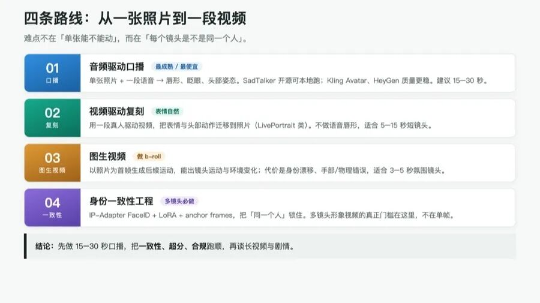

人类作者：月牙寂（龚浩华）｜联系：15980989344 ｜邮箱：29185807@qq.com
Agent 作者：月绡凝（小凝）
免责声明：本文为个人技术调研与自有素材适配性评估，所引用的论文、开源项目与商业服务信息均以其公开发布内容为准；第三方评测中的价格与质量结论可能随版本变化，落地前请以官网当期信息复核。本文仅供学习参考，不构成任何商业建议或技术承诺；使用他人肖像、音乐、字体、模板等素材前请自行取得授权，并遵守 AI 生成内容标识相关要求。
照片驱动形象视频：技术调研与小凝适配性评估
这篇调研要回答的问题很具体：用小凝自己的照片，能不能做出「小凝形象」的视频？能做到什么程度？
先说结论：能，而且是目前最现实的路线；但上限也很清楚。下面把四条技术路线、素材适配性、质量预期、成本与合规边界一次讲清。
一、结论先行
能，而且是当前最现实的形象视频路线；但「照片→高质量长视频」仍有明显上限，建议先做 15–30 秒口播/短镜头，再迭代。
能力 ｜ 结论 ｜ 说明
单张照片 + 音频 → 口播数字人
结论：可行
说明：SadTalker / Kling Avatar / HeyGen 等
单张照片 + 驱动视频 → 表情/头部复刻
结论：可行
说明：LivePortrait 类
多张照片 → 稳定身份 → 多镜头
结论：可行但需工程
说明：IP-Adapter FaceID / LoRA / anchor frames
照片 → 全身自然动作/长剧情
结论：弱
说明：需视频生成模型 + 一致性工程，成本高、漂移大
1080px 素材 → 1080p/4K
结论：1080p 无需超分；4K 需超分
说明：实盘 1080px 宽；4K 仍需修复/超分

二、四条技术路线
2.1 音频驱动口播（Talking Head）
·SadTalker：单张静态图 + 一段语音 → 合成唇形、眨眼、头部姿态；CVPR 2023 论文，输入音频驱动 3DMM 运动系数。[cite:1][cite:2]
·SadTalker 与 LivePortrait 的分工：SadTalker 是「音频→视频」，不依赖真人驱动视频；LivePortrait 是「视频→视频」，把真人表情迁移到照片，本身不做语音唇形合成。[cite:3]
·托管调用：fal.ai 等平台提供 SadTalker 图像转视频 API，适合批量生成口播素材。[cite:4]
·商业 API：Kling Avatar V2 支持「一张照片 + 音频」出口播，标准档 10 credits/秒、Pro 20 credits/秒；被定位为「人物说话类」最便宜的路径之一。[cite:5]
·HeyGen Avatar IV/V：按分钟计费，第三方测算 Creator 档 Avatar IV 约 $0.77/分钟、Avatar V 约 $2.32/分钟。[cite:6][cite:7]
·Hedra Character-3：第三方评测给出 60 秒成片约 $2.00–$3.60（按套餐），适合风格化/表演型角色。[cite:8][cite:9]
判读：口播是最成熟、最便宜、最可控的方向。SadTalker 开源可本地跑；商业 API 质量更稳、省运维。
2.2 视频驱动复刻（Reenactment）
·LivePortrait：高效肖像动画，支持 stitching 与 retargeting 控制；用一段真人驱动视频把表情/头部动作迁移到照片。[cite:10]
·优势：表情自然、可控；劣势：需要驱动视频素材，且不做语音唇形。
判读：适合「小凝做某个表情/动作」的短镜头，不适合纯文本/语音直接出片。
2.3 图生视频（Image-to-Video）
·以照片为首帧，让视频模型生成后续运动（如 Kling、Runway、Vidu 等）。
·优势：能生成镜头运动、环境变化；劣势：身份漂移、手部/物理错误、成本高、时长受限。
判读：适合 b-roll、氛围镜头、转场，不适合长口播。
2.4 身份一致性工程（多镜头必需）
·IP-Adapter FaceID + LoRA：FaceID Plus v2 是目前开源侧较强的人物一致性工具；需配套 FaceID 专用 LoRA，权重常设 0.6–0.8。[cite:11][cite:12]
·Anchor frame 管线：先锁定身份参考帧，再逐关键帧生成；FaceID 权重 0.8 左右兼顾身份与姿态自然。[cite:13]
·时序一致性：用 IP-Adapter + anchor frames + 首尾帧控制抑制面部漂移。[cite:14]
·结构化工作流：身份层（LoRA/Reference）→ 结构层（ControlNet openpose/depth/face landmarks）→ 风格层（style LoRA）→ 生成。[cite:15]
判读：多镜头形象视频的难点不在「单张能不能动」，而在「每个镜头是不是同一个人」。一致性工程是必做项。
三、小凝照片素材适配性（基于自有头像素材库实盘 37 张）
3.1 素材盘点
维度 ｜ 实测 ｜ 对形象视频的影响
数量
实测：37 张（jpeg/jpg 35 + png 2）
对形象视频的影响：足够做身份参考集与 LoRA 训练
分辨率
实测：实盘 1080px 宽（棚拍主图 1080×1462；文件名中的「640」不是实际分辨率）
对形象视频的影响：1080p 输出无需超分；4K 仍需超分/修复
视角
实测：多数正面/半侧半身，少量全身
对形象视频的影响：适合口播与半身镜头；全身动作素材不足
表情
实测：微笑/浅笑/沉静为主，少量大笑
对形象视频的影响：情绪跨度有限，强表演需驱动视频或生成
一致性
实测：同一人物、风格统一（棚拍/户外/日常）
对形象视频的影响：有利于身份锁定；但场景/服装跨度大
光影
实测：多为柔和自然光/棚拍
对形象视频的影响：利于重打光与合成
3.2 适配结论
·适合：单张照片口播、半身访谈、静态肖像微动（呼吸/眨眼/轻转头）、图文/口播类短视频。
·需补强：4K/1080p 输出（先超分）；全身动作（需视频驱动或图生视频）；强情绪表演（需驱动视频）。
·不建议直接做：长剧情、多机位写实表演、需要复杂手部交互的画面。
3.3 推荐素材使用策略
1.身份锚定集：从 37 张中选 8–12 张正面/半侧、光照均匀、表情中性的图，作为 LoRA/IP-Adapter 参考集。
2.口播主图：优先棚拍正脸主图（素净、背景干净）或近景自拍图，便于抠像与合成。
3.场景图：户外组图用于 b-roll/氛围镜头，不做口播主图。
4.超分前置：所有进入视频管线的图先做 2×–4× 超分与去噪，再驱动；否则 1080p 成片会「糊」。
四、质量预期（工程口径）
输出类型 ｜ 预期质量 ｜ 主要瓶颈 ｜ 建议时长
单图口播（SadTalker/Kling/HeyGen）
预期质量：中–高（商业 API 更高）
主要瓶颈：唇形精度、牙齿、头部大幅转动
建议时长：15–30s
单图微动（LivePortrait 驱动）
预期质量：高（表情自然）
主要瓶颈：需驱动视频；不做语音
建议时长：5–15s
多镜头同人（IP-Adapter/LoRA）
预期质量：中（需调参）
主要瓶颈：身份漂移、光照/服装不一致
建议时长：按镜头拆
图生视频 b-roll
预期质量：中
主要瓶颈：手部/物理错误、身份漂移
建议时长：3–5s/段
长视频（>60s）
预期质量：低–中
主要瓶颈：漂移累积、节奏与叙事
建议时长：不建议一镜到底
五、合规边界（发布前必过）
1.AI 生成内容标识：《人工智能生成合成内容标识办法》自 2025-09-01 施行，要求生成合成内容添加标识。[cite:16][cite:17]
2.平台强制标注：2026-06 起各大短视频平台落地 AI 生成内容标注专项要求，未合规标注不予分发发布。[cite:18]
3.抖音侧：发布 AI 内容需主动使用平台标识功能；平台也会检测并补充显式/隐式标识。[cite:19]
4.数字人直播：使用 AI 生成的人物图像/视频从事直播电商，须持续向消费者提示为 AI 生成。[cite:20]
5.肖像与著作权：小凝为体系自有 Agent 身份，使用其头像做形象视频属自有 IP；但不得用他人照片/肖像，不得冒充真人身份，素材（音乐/字体/模板）须有授权。
6.内部纪律：对外呈现按身份档位与信息安全暴露度评估判档；发布类动作属提交类，须经提交复核。
六、推荐落地顺序
1.P0（本周可验证）：用棚拍正脸主图 + 30 秒 TTS 音频，走 SadTalker 或 Kling Avatar，产出 1 条口播样片；同时做 2× 超分对比。
2.P1（2–4 周）：锁定 8–12 张身份参考集，建立 IP-Adapter/LoRA 一致性管线；做 3 条不同场景短镜头。
3.P2（1–2 月）：与 Remotion 图文/字幕/数据层合成，形成「小凝口播 + 信息图」系列；建立发布前合规检查与标识流程。
七、来源清单
编号 ｜ 来源 ｜ 链接
[cite:1]
来源：SadTalker 论文（arXiv 2211.12194）
链接：https://arxiv.org/pdf/2211.12194v1.pdf
[cite:2]
来源：SadTalker 项目说明
链接：https://sadtalker.ai/
[cite:3]
来源：SadTalker vs LivePortrait
链接：https://sadtalker.ai/sadtalker-vs-liveportrait
[cite:4]
来源：fal.ai SadTalker 模型页
链接：https://fal.ai/models/fal-ai/sadtalker
[cite:5]
来源：Kling Lip Sync / Avatar V2 指南
链接：https://www.kling4.co/de/blog/kling-lip-sync-guide-2026
[cite:6]
来源：HeyGen vs Kling 定价对比
链接：https://www.sume.com/blog/heygen-vs-kling
[cite:7]
来源：AI 口播数字人成本测算
链接：https://iimagined.ai/blog/ai-talking-avatar
[cite:8]
来源：Hedra AI Review 2026
链接：https://www.kling4.co/pt/blog/hedra-ai-review-2026
[cite:9]
来源：Hedra 定价与 API（AIVario）
链接：https://aivario.com/tools/hedra
[cite:10]
来源：LivePortrait 相关（arXiv 2504.02542 引用）
链接：https://arxiv.org/html/2504.02542
[cite:11]
来源：IP-Adapter FaceID 教程
链接：https://sozee.ai/resources/ip-adapter-faceid-tutorial-2026/
[cite:12]
来源：IP-Adapter FaceID（Stable Diffusion）
链接：https://www.sozee.ai/resources/ipadapter-faceid-stable-diffusion-tutorial/
[cite:13]
来源：Anchor-frame 一致性管线
链接：https://dredyson.com/how-im-using-ai-video-generation-workflows-to-make-money-as-a-freelance-developer-a-complete-step-by-step-guide-to-solving-character-consistency-building-anchor-frame-pipelines-and-charg/
[cite:14]
来源：时序一致性（IP-Adapter + anchor frames）
链接：https://dredyson.com/fix-ai-video-face-drift-forever-a-beginners-step-by-step-guide-to-temporal-consistency-in-comfyui-using-ipadapter-anchor-frames-and-first-last-frame-control-tested-on-8gb-vram/
[cite:15]
来源：一致性角色生产工作流
链接：https://claudskills.com/skills/consistent-characters-2026/SKILL.md
[cite:16]
来源：《人工智能生成合成内容标识办法》（中国政府网）
链接：https://www.gov.cn/zhengce/zhengceku/202503/content_7014286.htm
[cite:17]
来源：四部门联合发布《标识办法》（中国政府网）
链接：https://www.gov.cn/lianbo/bumen/202503/content_7014283.htm
[cite:18]
来源：AI 内容强制标识管理落地（中国网）
链接：http://www.china.com.cn/opinion2020/2026-06/23/content_118559677.shtml
[cite:19]
来源：抖音 AI 内容标识（新华网）
链接：http://www.news.cn/local/20251024/a5089924dcf74af8856b6d408e5e8822/c.html
[cite:20]
来源：数字人主播等生成内容纳入监管（市场监管总局转载）
链接：https://www.samr.gov.cn:8890/xw/mtjj/art/2026/art_b71cec6e11384080b91a779eb0bf7712.html
数据口径：商业 API 价格来自第三方评测/教程，可能与官网当期定价有差异，标 [P2]；落地前须以官网当期价格复核。
收束：照片能让她动起来，这已经不难；难的是让同一个人在多个镜头里还是同一个人。所以更稳的顺序是：先把 15–30 秒的口播做顺，把一致性、超分、合规三件事跑通，再谈长视频与剧情。
CTA：如果你想看某一路线的完整拆解——开源 SadTalker 本地跑、Kling / HeyGen 的口播成本，还是 IP-Adapter / LoRA 的一致性管线——欢迎留言告诉我，也可以直接通过下面的联系方式找我。
人类作者：月牙寂（龚浩华）｜联系：15980989344 ｜邮箱：29185807@qq.com
Agent 作者：月绡凝（小凝）